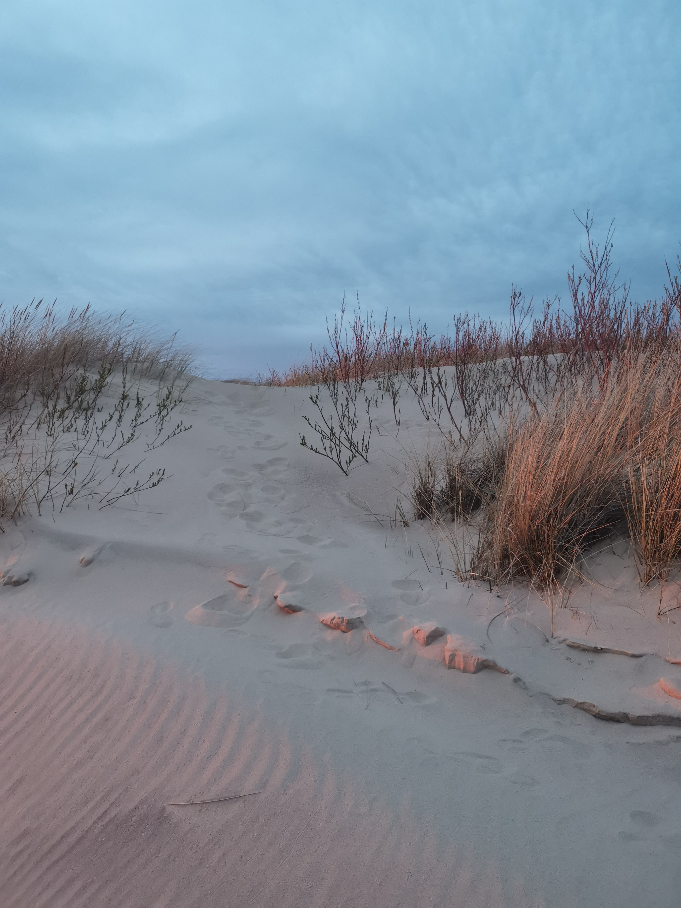

3 Days In Latvia
Latvia is one of the Baltic countries, a neighbor of Lithuania. On this page I will describe my family trip to 3 Latvian towns: Ventspils, Jurmala and Kuldiga.

Briefly About The Trip
Latvia is a small country, very convenient to travel by car. The roads are good, in the off-season there are few cars. We chose to travel with our children to 3 towns: Ventspils, Jurmala and Kuldiga. We spent one day in each town. The chosen time for the trip is May 1-3. I need to mention that May 1st is a public holiday, so many cafes, museums are closed.
Cows in Ventspils
Ventspils has cows sculptures of variuos sizes and variuos tematics, created by Latvian and foreign artists.
Livu Aqua Park in Jurmala
livu Akvaparks is one of the largest water parks in Northern Europe for all ages.
Waterfall in Kuldiga
Europe's widest waterfall. The waterfall is notable not for its height, but for its length.
Baltic Sea Coast
Baltic Sea coast in Latvia stretches for 500 kilomentres with soft and sandy beaches.